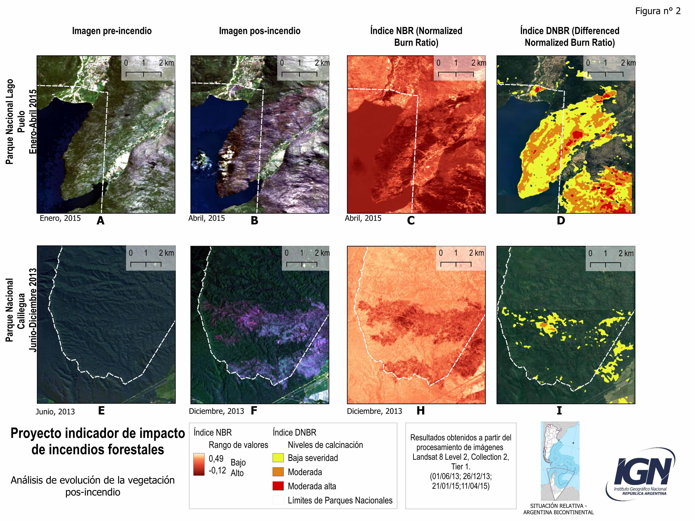

Los incendios forestales representan una de las principales perturbaciones ecológicas en los ecosistemas terrestres, provocando transformaciones significativas en la cobertura vegetal. Su impacto no solo afecta a la biodiversidad y los servicios ecosistémicos, sino que también plantea desafíos para la recuperación de los paisajes afectados. Este trabajo analiza dos eventos de incendios ocurridos en parques nacionales con el objetivo de evaluar la recuperación de la vegetación en cada caso y generar conocimiento sobre los procesos de recuperación ecológica y las diferencias en la respuesta de los ecosistemas.
Fuente: Elaboración propia con base en datos promedio de NDVI obtenidos de imágenes Landsat 8 (Level 2, Collection 2, Tier 1), correspondientes al período 2013-2024.
Para el desarrollo del indicador se emplearon diversos materiales y herramientas. Esto incluye Google Earth Engine (GEE), plataforma que permitió el procesamiento y análisis de imágenes satelitales que permiten calcular índices espectrales como el NBR (Normalized Burn Ratio), el DNBR (Normalized Difference Burn Ratio), y el NDVI (Normalized Difference Vegetation Index). Asimismo, como complemento se utilizó Qgis para cargar y visualizar las imágenes raster pudiendo aplicar estilos y colores según las necesidades de la representación visual de la información.
La metodología empleada en este indicador se divide en tres etapas:
En la primera etapa se llevó a cabo una revisión exhaustiva de estudios previos existentes que permiten comprender cómo se han abordado los tiempos de recuperación tras un incendio y las diferentes metodologías empleadas mediante el uso de imágenes satelitales.
Luego, a lo largo de la segunda etapa se identificaron dos casos que tuvieran alta cobertura de leñosas en dos biomas distintos (selva y bosque), como ser los casos de los parques nacionales Calilegua y Lago Puelo. De esta manera, se seleccionaron los focos ocurridos en el año 2013 para el caso de Calilegua y el 2015 para Lago Puelo. La selección de las áreas de análisis se justifica por los siguientes motivos, en primer lugar, ambos parques representan ecosistemas de alta relevancia ecológica y biodiversidad. Calilegua forma parte de la eco-región de las Yungas, mientras que Lago Puelo pertenece a los Bosques Patagónicos. Estos ecosistemas son prioritarios para la conservación, por lo que analizar su recuperación post-incendio aporta información valiosa sobre la resiliencia de ecosistemas críticos en Argentina. En segundo lugar, al analizar diverso tipo de documentación sobre los incendios ocurridos en ambos parques, los focos mostraban una extensión superficial importante y cumplían con haber ocurrido en la ventana temporal establecida (entre 2010 y 2015) para poder realizar la evaluación temporal, en este caso corresponden a los años 2013 y 2015. Estas fechas permitieron evaluar procesos de recuperación a mediano y largo plazo, proporcionando una perspectiva completa sobre cómo se ha regenerado la vegetación en áreas gravemente afectadas por el fuego.
En la tercera etapa se estimó el NBR pre y post incendio para evaluar la extensión del área quemada. Este índice, se estima a partir de las bandas del infrarrojo cercano (NIR del inglés Near Infrared) y el infrarrojo de onda corta (SWIR del inglés short wave Infrared), para el caso de Landsat 8 estas serían la bandas 5 y 7 respectivamente). Los valores que puede tomar el índice van entre -1 y 1, los valores más bajos indican zonas más afectadas o sin vegetación y los valores más altos indicarían zonas no afectadas.
A su vez, se calculó el DNBR para estimar la severidad de la afectación sobre la cobertura vegetal. El cálculo se realizo utilizando como referencia una imagen previa al incendio y otra inmediatamente posterior.
Por último para analizar la recuperación de la cobertura vegetal se seleccionaron las áreas de mayor severidad y se estimó el NDVI en 6 imágenes correspondientes a los años: 2016, 2018, 2019, 2021, 2022 y 2024. Así se obtuvo un valor de NDVI para cada año para la zona de mayor afectación. El NDVI es un índice que se relaciona fuertemente con la cobertura vegetal y con el verdor o estado de salud de esa cobertura vegetal. Se calcula a partir de la reflectancia en longitud de onda del infrarrojo cercano (NIR) y en el rojo (red), dado que la vegetación sana, debido a la clorofila, tiene un pico de reflectancia en el NIR y un mínimo en el rojo. En Landsat 8 el NIR es la banda 5 y el rojo la banda 4. El índice puede tomar valores entre -1 y 1, los valores negativos o cercanos a cero indican agua, nieve o superficies sin vegetación, valores positivos indican un nivel creciente de cobertura vegetal y verdor de esa cobertura. Los valores promedio de NDVI se graficaron en función del año para cada parque y se analizo su temporal comportamiento. Los análisis se realizaron en la plataforma Google Earth Engine (GEE).

En relación con el Parque Nacional Lago Puelo y P. N. Calilegua, se observan diferencias significativas en la topografía y la vegetación, (FIGURA 1 A y E). Calilegua presenta un relieve con pendientes más suaves que Lago Puelo pero con una vegetación más frondosa y uniforme, mientras que Lago Puelo muestra mayores pendientes, donde la vegetación crece de forma dispersa entre áreas con suelo desnudo y afloramientos rocosos.
La superficie quemada, fue mayor para el incendio en Lago Puelo, aunque la proporción de la zona quemada dentro de cada parque nacional fue mayor para Calilegua. La intensidad de daño fue mayor en Lago Puelo, observándose áreas con valores de calcinación moderada y alta (Figura 2D), los cuales no se registraron en Calilegua (Figura 2 I). A su vez en Lago Puelo se observa una gran extensión para la clase de severidad baja (Figura 2 D) mientras que para Calilegua si bien el NBR indica una gran área afectada (Figura 2 H) el DNBR no la recupera y las zonas aparecen con niveles de calcinación bajos y discontinuos (Figura 2 I).
En cuanto a la evolución de la vegetación posterior al incendio, el análisis del NDVI revela diferencias entre ambos parques (Figura 1). En Lago Puelo, el incendio provocó una disminución de 0.25 en el índice, mientras que en Calilegua la caída fue menor, tomando un valor de 0.18. Durante el proceso de recuperación, ambos parques muestran un aumento del valor del índice los primeros años, indicando una recuperación de la cobertura vegetal. En Lago Puelo, se observa una estabilización por debajo de los valores previos al incendio a partir de 2018, es decir 3 años después del incendio, sin muestras de recuperación para los años siguientes. En cambio, en Calilegua 3 años después del incendio ya había recuperado los valores de NDVI previos al incendio. Sin embargo, este parque experimentó un retroceso en 2021, posiblemente debido a la sequía que afectó al país en ese periodo, luego volvió a crecer, alcanzando un valor 0.15 por encima del valor del índice pre-incendio.
Fernández, M. C. N., Albornoz, J., Bellis, L. M., Baldini, C., Arcamone, J., Silvetti, L., ... & Argañaraz, J. P. (2023). Megaincendios 2020 en Córdoba: Incidencia del fuego en áreas de valor ecológico y socioeconómico. Ecología Austral, 33(1), 136-151.Recuperado de https://ri.conicet.gov.ar/bitstream/handle/11336/222309/CONICET_Digital_Nro.03a9628b-5dc7-4c41-9120-a057f4405747_B.pdf?sequence=2
Chuvieco, E., & Congosto, J. A. (1995). Aplicaciones de imágenes NOAA-AVHRR al seguimiento de incendios forestales. Revista de Teledetección, (10), 15-19.
Comisión Nacional de Actividades Espaciales (CONAE). (n.d.). Catálogo de focos de calor MODIS. Recuperado de https://catalogos5.conae.gov.ar/catalogofocos/default.aspx
Delegido, J., Pezzola, A., Casella, A., Winschel, C., Urrego, E. P., Jimenez, J. C., & Moreno, J. (2018). Estimación del grado de severidad de incendios en el sur de la provincia de Buenos Aires, Argentina, usando Sentinel-2 y su comparación con Landsat-8. Revista de Teledetección, (51), 47-60.
Escobar, A., Morales, J., & Navarro, F. (2012). Recuperación de áreas quemadas: monitoreo como herramienta de restauración de zonas afectadas por incendios forestales. IX SINRAD - Simpósio Nacional sobre Recuperação de Áreas Degradadas. Rio de Janeiro – Brasil. Recuperado de https://www.researchgate.net/publication/350923089_Recuperacion_de_areas_quemadas
Carlos Hernando Rodríguez León, Armando Sterling Cuellar, (Eds.) (2020). Sucesión ecológica y restauración en paisajes fragmentados de la Amazonia colombiana. Tomo 1. Composición, estructura y función en la sucesión secundaria. Bogotá, Colombia: Instituto Amazónico de Investigaciones Científicas SINCHI, 202.Recuperado de https://sinchi.org.co/files/publicaciones/novedades%20editoriales/pdf/sucesion%20ecologica%20tomo%201.pdf
Escobar, A., Morales, J., & Navarro, F. (2021). Recuperación de áreas quemadas: monitoreo como herramienta de restauración de zonas afectadas por incendios forestales. Recuperado de https://www.researchgate.net/publication/350923089_Recuperacion_de_areas_quemadas
Landi, M.A., Ojeda, M. S., Di Bella, C., Salvatierra, C., & Bellis, L. M. (2017). Selección de parcelas control para estudios de la dinámica post incendio: desempeño de rutinas no paramétricas y autorregresivas . Revista de Teledetección, (49), p.79. Recuperado de http://biblio.unvm.edu.ar/opac_css/35995/1742/Landi-ojeda-DiBella-Salvatierra-arg-Bellis-Seleccion-parcelas.pdf
Leber, Tomás. "Caracterización de los focos de calor en la Patagonia argentina y la recuperación de la vegetación post - fuego". (2018). Trabajo Final para obtener el grado de Especialista de la Universidad de Buenos Aires en Teledetección y Sistemas de Información Geográfica otorgado por la Universidad de Buenos Aires. Facultad de Agronomía. Escuela para Graduados.
Ministerio de Ambiente de Uruguay. (2024). Clasificar ecosistema antes (y después) del incendio para ver qué se quemó y qué se recupera luego o en qué se transforma. Recuperado de https://www.ambiente.gub.uy/oan/documentos/Serie_InfTec_SivInformacionAmbiental_Incendios_feb2024.pdf
Pons, X., Solé-Sugrañes, L., & Estornell, J. (2006). Cadena de preprocesamiento estándar para las imágenes Landsat del Plan Nacional de Teledetección. Revista de Teledetección, (25), 95-110.
Rangel, O., & Velásquez, A. (1997). Métodos de estudio de vegetación. En Rangel, O., Lowy, P., & Aguilar, M. (Eds.), Colombia Diversidad Biótica II (pp. 59-87). Universidad Nacional de Colombia.
Sánchez, M., Baldassini, P., Fischer, M. D. L. A., Torre Zaffaroni, J., & Di Bella, C. M. (2023). Dónde, cuándo y cómo ocurren grandes incendios en la provincia de La Pampa, Argentina. Una caracterización basada en sensores remotos. Ecología Austral, 33(1), 211–228. Recuperado de https://doi.org/10.25260/EA.23.33.1.0.1972
Secretaría de Ambiente y Desarrollo Sustentable de la Nación. (2016). Análisis preliminar de focos de calor detectados con MODIS. Recuperado de https://www.argentina.gob.ar/sites/default/files/ambiente-analisispreliminarfocoscalormodis_160317_02_final.pdf
Uribe, J. M., & Vásquez, F. (2022). Recuperación de la vegetación por tipo pos incendio: estudio en Chile basado en trabajo de campo. Gayana Botánica, 79(1), 1-14. Recuperado de https://www.scielo.cl/scielo.php?script=sci_arttext&pid=S0717-66432022000100010
Vázquez, F. S. (1996). Principios de teledetección. EDITUM.